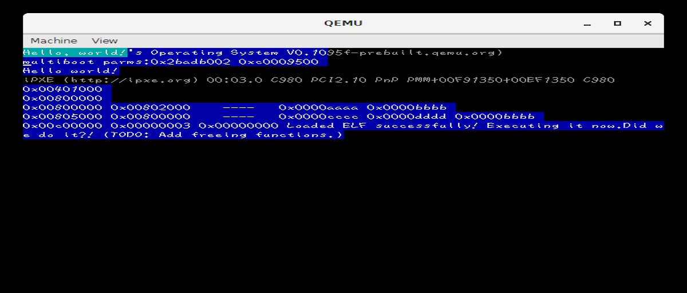

Hello!
Hi there. This is the first article on my website.
Note, I will not be able to do any interactive stuff because I use GitHub Pages to host my site. So if you have any comments about one of my posts, please tell me through a communication platform such as Bluesky, Discord (@iprogramincc), or e-mail (this website's name (minus the .com) @gmail.com)
What am I working on right this moment?
I am working on this article, of course. But the ongoing project I'm working on right now is CelesteNES. Go there to see more about it.
I will post more about it soon, there's plenty of interesting stuff I would like to document here.
How did you do this?
iProgramInCpp's MarkdownBlogThing! It's just a hacky shell script. In fact, the entire thing can actually be found right in the GitHub Pages repo.
Just testing some more markdown stuff
First, a list of
- Things
- Stuff
- And more...
Then, an image: 